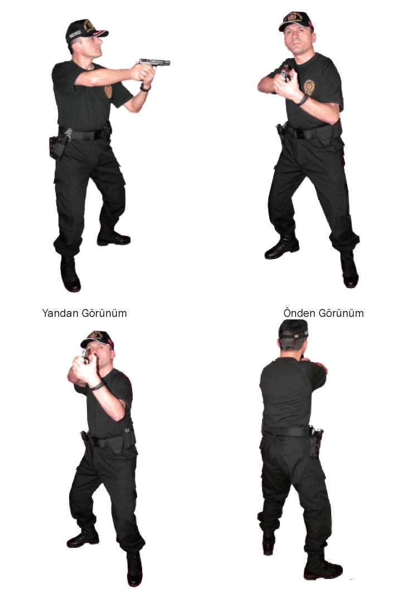
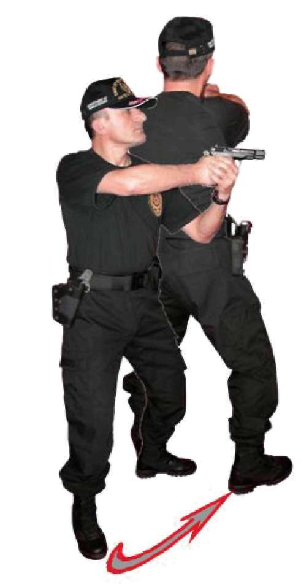
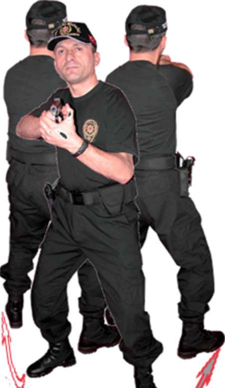

Operasyon sırasında silahın kontrolü sürekli yapılarak meydana gelebilecek olumsuzluklar anında fark edilir. Bu durum kişide refleks haline gelir.
1.3. YARI OTOMATİK TABANCA İLE SABİT POZİSYONDA DEĞİŞİK
YÖNLERDEN ÇIKAN HEDEFLERE DOĞRU DÖNÜŞ VE ATIŞ TEKNİKLERİ
1.3.1. Öndeki Hedeflere Doğru Atış Pozisyonu ve Atış Tekniği
^ Çift elle kavranan yarı otomatik dolu tabancayı göğsünüze doğru toplayın, vücudunuzun göğüs kısmı hedefe dik, bacaklar hafif kırık ve hızlı atış pozisyonunda olmalıdır. Verilen atış komutuyla birlikte tabancayı 46

BÖLÜM
İLERİ SEVİYE ATIŞ TEKNİKLERİ
hızlı bir şekilde hedefe doğru yönelterek bir veya birden çok atış yaptıktan sonra geri toplayıp ikinci komutu bekleyin. Ayrıca bu teknik, tabanca kılıfta dolu ve boş durumdayken de uygulanabilir.
^ Komutla beraber, dolu olan tabancayı kılıftan hızlı bir şekilde çekin. Tabancayı hedefe düz bir hattan doğrultup ateş edin ve tekrar kılıfına koyun.
Eğer fişek yatağına fişek sürülmeden tabanca kılıfa konmuşsa, bu durumda silahı kurma teknikleri uygulanarak atış yapılır. (Bakınız Resim-5.a) Önden Görünüm Arkadan Görünüm
Resim-5.a) Durarak Öne Doğru Atış Teknikleri (Yarı Otomatik Tabanca) 47
1.3.2. Sağdaki Hedeflere Doğru Dönüş ve Atış Tekniği
^ Bulunduğunuz atış pozisyonundan sağ yöndeki hedef ve hedeflere dönerken, çift elle kavramış olduğunuz yarı otomatik tabancayı göğsünüze doğru toplayın. Sağ ayak topuğu sabit olmak üzere sağ ve sol ayağınızı vücudunuzla beraber sağ yöne çevirin, bozulan sol ayağı başlangıçta olduğu gibi sağ ayağın yanına alırken tabancayı göğüsten hedefe doğrultarak atış yapın. (Bakınız Resim-5.b) Resim-5.b) Durarak Yarı Otomatik Tabanca ile Sağa Dönüş ve Atış Tekniği 1.3.3. Soldaki Hedeflere Doğru Dönüş ve Atış Tekniği
^ Sağ yöne dönme tekniğinin tersi uygulanır. Çift elle kavramış olduğunuz yarı otomatik tabancayı göğsünüze doğru toplayın, sol ayak topuğu sa-48

BÖLÜM
İLERİ SEVİYE ATIŞ TEKNİKLERİ
bit olmak üzere sol ve sağ ayağınızı vücudunuzla beraber sol yöne çevirin, bozulan sağ ayağı başlangıçta olduğu gibi sol ayağın yanına alırken tabancayı göğüsten hedefe doğrultarak atış yapın. (Bakınız Resim-5.c) Resim-5.c) Durarak Yarı Otomatik Tabanca ile Sola Dönüş ve Atış Tekniği 1.3.4. Gerideki Hedeflere Doğru Dönüş ve Atış Tekniği
^ Bulunduğunuz atış pozisyonundan vücudunuzu tam geriye döndürürken çift elle kavramış olduğunuz yarı otomatik tabancayı göğsünüze doğru toplayın. Dönüş yapacağınız yöndeki ayağınızın topuğu sabit olacak şekilde diğer ayağın ucuyla 180 derecelik bir dönüş yapın. Ayaklar başlangıçtaki atış pozisyonunu alırken tabancayı göğüsten hedefe doğru doğrultarak atış yapın. (Bakınız Resim:5.d) 49

Sağdan Geriye
Dönüş
Soldan Geriye
Dönüş
Resim:5.d) Durarak Gerideki Hedefleri Doğru Yarı Otomatik Tabanca ile Dönüş ve Atış Tekniği
Tekniği Uygulamalı Olarak Çalışma Şekli
^ Emniyet tedbirlerini okuyun. Atış poligonunda atış emniyeti ile ilgili gerekli önlemleri alın.
^ Eğitime katılan herkesin vücudunu, basit ısınma teknikleri ile ısındırarak çalışmaya hazırlayın. Silah ve şarjörleri kontrol edip koruyucu malzemeleri giyin ve giydirin.
^ Teknik ile ilgili atışlı çalışma yapmadan önce tekniğin tamamını kapsayacak atışsız pratik çalışma yaptırın.
^ Poligonun büyüklüğüne göre bu tekniği çalışmak için yerleştireceğiniz daireli hedef sayısını ve çalışma yaptıracağınız personel sayısını belirleyin.